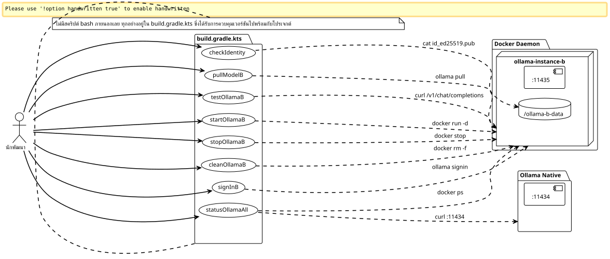
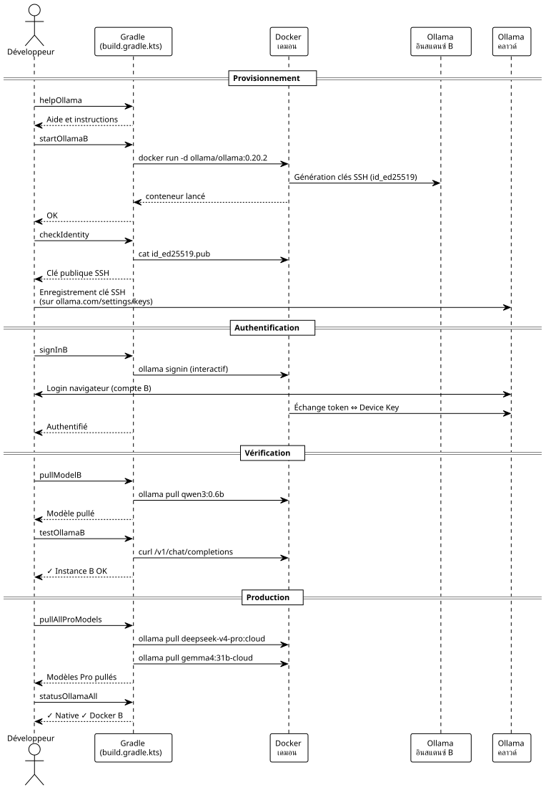

ปลั๊กอิน Gradle แบบทำเองสำหรับควบคุมอินสแตนซ์ Ollama Pro สองอินสแตนซ์แบบขนาน
เผยแพร่เมื่อ 08 May 2026
ทำไมต้องพิมพ์คำสั่ง docker ด้วยมือ ในเมื่อเราสามารถห่อทุกอย่างไว้ในงาน Gradle ได้? นี่คือวิธีที่ฉันทำให้คอนฟิก dual-Ollama Pro ของฉันเป็นระบบโดยไม่มีสคริปต์ shell ภายนอกเลย การเริ่มต้น การหยุด ตัวตน sign-in, pull — ทุกอย่างผ่าน`./gradlew`.
บทนำ
ในบทความก่อนหน้า ผมได้แสดงวิธีทำให้บัญชี Ollama Pro สองบัญชีอยู่ร่วมกันบนเครื่องเดียวกัน โดยแยกอินสแตนซ์ที่สองไว้ในคอนเทนเนอร์ Docker การตั้งค่านี้ใช้งานได้ แต่การจัดการในชีวิตประจำวันกลายเป็นเรื่องน่ารำคาญอย่างรวดเร็ว: การจำชื่อคอนเทนเนอร์ การรันคำสั่งที่ถูกต้องอีกครั้ง`docker exec`, ตรวจสอบว่าพอร์ตใดเปิดใช้งานอยู่…
คุณรู้จักช่วงเวลาที่คุณมีเทอร์มินัลเปิดอยู่ 14 ตัว และคุณกำลังพิมพ์`docker exec ollama-instance-b ollama list`เป็นครั้งที่สี่แล้ว และคุณกำลังบอกตัวเองว่า «ต้องมีวิธีที่สะอาดกว่านี้แน่ ๆ» ใช่ไหม
วิธีนี้คือ Gradle
ไม่ใช่แค่สำหรับ build โค้ด Gradle ในฐานะผู้ควบคุมวงของโครงสร้างพื้นฐานภายในเครื่อง งานที่จัดเตรียม ตรวจสอบ ทดสอบ และทำความสะอาด ทั้งหมดถูกควบคุมเวอร์ชันไว้ใน`build.gradle.kts`ที่อาศัยอยู่ข้าง ๆ ของ`docker-compose.yml`.

ทำไมต้องใช้ Gradle สำหรับโครงสร้างพื้นฐาน?
คำถามนี้สมเหตุสมผล Gradle เป็น build tool โดยปกติแล้วมันจะคอมไพล์ ทดสอบ และแพ็กเกจ ไม่ใช่ไปรันคอนเทนเนอร์ Docker
เพียงแต่ Gradle ยังเป็นเอนจินกราฟการพึ่งพาด้วย — และนั่นแหละคือจุดที่มันน่าสนใจสำหรับกรณีของเรา
เราต้องการ:
-
ให้คอนเทนเนอร์เริ่มทำงานก่อนการลงชื่อเข้าใช้
-
ให้มีการยืนยันตัวตนก่อนการดึงโมเดล
-
ว่าการทดสอบ API ล้มเหลวอย่างเงียบ ๆ หากคอนเทนเนอร์ล่ม
ว่าด้วยกราฟการพึ่งพาล้วน ๆ Gradle ถูกออกแบบมาเพื่อสิ่งนี้ DSL ของ Kotlin ทำให้การเขียนงานลื่นไหล และ`doLast`ทำให้สามารถเรียกใช้คำสั่งระบบได้ราวกับเป็นโค้ดแอปพลิเคชัน
และที่สำคัญที่สุด: ไม่มี bashrc ที่ต้องดูแลรักษา ไม่มีสคริปต์ที่วางเกะกะอยู่ใน`~/bin`, ไม่มี Makefile อยู่ข้าง ๆ docker-compose ทุกอย่างอยู่ในไฟล์เดียว ณ ตำแหน่งเดียวกับโค้ดของโปรเจกต์
build.gradle.kts ฉบับสมบูรณ์
นี่คือไฟล์ที่ฉันเขียนจนเสร็จในที่สุด มันทำทุกอย่าง ตั้งแต่การจัดเตรียมโวลุ่ม ไปจนถึง curl สำหรับตรวจสอบ ไปจนถึงการลงชื่อเข้าใช้แบบโต้ตอบ
import java.io.ByteArrayOutputStream
plugins {
base
}
// -------------------------------------------------------------------------
// Configuration
// -------------------------------------------------------------------------
val instanceName = "ollama-instance-b"
val instancePort = 11435
val instanceImage = "ollama/ollama:0.20.2"
val dataDir = file("${System.getProperty("user.home")}/ollama-b-data")
val nativePort = 11434
// Modèles à gérer — cloud Pro + un modèle local gratuit pour les tests
val proModels = listOf("deepseek-v4-pro:cloud", "gemma4:31b-cloud")
val freeModels = listOf("qwen3:0.6b")
// -------------------------------------------------------------------------
// Tâche préparatoire — création du volume si absent
// -------------------------------------------------------------------------
val prepareVolume by tasks.registering {
group = "ollama"
description = "Crée le répertoire de volume pour l'instance B si absent"
doLast {
if (!dataDir.exists()) {
dataDir.mkdirs()
println("Volume créé : ${dataDir.absolutePath}")
} else {
println("Volume existant : ${dataDir.absolutePath}")
}
}
}
// -------------------------------------------------------------------------
// Démarrage du conteneur Docker
// -------------------------------------------------------------------------
val startOllamaB by tasks.registering(Exec::class) {
group = "ollama"
description = "Lance le conteneur Docker pour l'instance Ollama B"
dependsOn(prepareVolume)
commandLine(
"docker", "run", "-d",
"--name", instanceName,
"-p", "$instancePort:11434",
"-v", "${dataDir.absolutePath}:/root/.ollama",
"-e", "OLLAMA_HOST=0.0.0.0",
"--restart", "always",
instanceImage
)
isIgnoreExitValue = true
doLast {
val alreadyRunning = executionResult.get().exitValue != 0
if (alreadyRunning) {
logger.lifecycle("Le conteneur '$instanceName' existe déjà — tentative de démarrage")
} else {
logger.lifecycle("Conteneur '$instanceName' lancé")
}
}
}
// -------------------------------------------------------------------------
// Arrêt du conteneur
// -------------------------------------------------------------------------
val stopOllamaB by tasks.registering(Exec::class) {
group = "ollama"
description = "Arrête le conteneur Docker de l'instance B"
commandLine("docker", "stop", instanceName)
isIgnoreExitValue = true
doLast {
logger.lifecycle("Conteneur '$instanceName' arrêté")
}
}
// -------------------------------------------------------------------------
// Affichage de la clé publique (Device Key)
// -------------------------------------------------------------------------
val checkIdentity by tasks.registering(Exec::class) {
group = "ollama"
description = "Affiche la clé publique SSH de l'instance B"
dependsOn(startOllamaB)
commandLine("docker", "exec", instanceName, "cat", "/root/.ollama/id_ed25519.pub")
standardOutput = ByteArrayOutputStream()
doLast {
val pubKey = standardOutput.toString().trim()
println("=".repeat(60))
println("Device Key (Instance B)")
println("=".repeat(60))
println(pubKey)
println("=".repeat(60))
println("→ Enregistre cette clé sur https://ollama.com/settings/keys")
println("→ Puis exécute : ./gradlew signInB")
println("=".repeat(60))
}
}
// -------------------------------------------------------------------------
// Sign-in interactif (Ouvrira le navigateur)
// -------------------------------------------------------------------------
val signInB by tasks.registering(Exec::class) {
group = "ollama"
description = "Lance l'authentification interactive Ollama pour le compte B"
dependsOn(startOllamaB)
standardInput = System.`in`
standardOutput = System.out
errorOutput = System.err
commandLine("docker", "exec", "-it", instanceName, "ollama", "signin")
doFirst {
logger.lifecycle("Authentification pour le Compte Pro B...")
logger.lifecycle("Ouvre ton navigateur et connecte-toi avec l'email du compte B")
}
}
// -------------------------------------------------------------------------
// Pull d'un modèle (paramétrable via propriété Gradle)
// -------------------------------------------------------------------------
val pullModelB by tasks.registering(Exec::class) {
group = "ollama"
description = "Pull un modèle sur l'instance B. Usage : ./gradlew pullModelB -Pmodel=nom:tag"
dependsOn(startOllamaB)
val modelName = project.findProperty("model") as? String ?: "qwen3:0.6b"
commandLine("docker", "exec", instanceName, "ollama", "pull", modelName)
doFirst {
logger.lifecycle("Pull du modèle '$modelName' sur l'instance B...")
}
doLast {
logger.lifecycle("Modèle '$modelName' pullé avec succès")
}
}
// -------------------------------------------------------------------------
// Pull de tous les modèles Pro (batch)
// -------------------------------------------------------------------------
val pullAllProModels by tasks.registering {
group = "ollama"
description = "Pull tous les modèles cloud Pro sur l'instance B"
dependsOn(startOllamaB)
doLast {
proModels.forEach { model ->
logger.lifecycle("→ Pull $model...")
val process = ProcessBuilder("docker", "exec", instanceName, "ollama", "pull", model)
.inheritIO()
.start()
process.waitFor()
}
logger.lifecycle("Tous les modèles Pro pullés")
}
}
// -------------------------------------------------------------------------
// Pull de tous les modèles gratuits (batch / première install)
// -------------------------------------------------------------------------
val pullAllFreeModels by tasks.registering {
group = "ollama"
description = "Pull tous les modèles locaux gratuits sur l'instance B"
dependsOn(startOllamaB)
doLast {
freeModels.forEach { model ->
logger.lifecycle("→ Pull $model...")
val process = ProcessBuilder("docker", "exec", instanceName, "ollama", "pull", model)
.inheritIO()
.start()
process.waitFor()
}
logger.lifecycle("Tous les modèles gratuits pullés")
}
}
// -------------------------------------------------------------------------
// Liste des modèles disponibles sur l'instance B
// -------------------------------------------------------------------------
val listModelsB by tasks.registering(Exec::class) {
group = "ollama"
description = "Liste les modèles disponibles sur l'instance B"
dependsOn(startOllamaB)
commandLine("docker", "exec", instanceName, "ollama", "list")
}
// -------------------------------------------------------------------------
// Health check — test API sur les deux instances
// -------------------------------------------------------------------------
val testOllamaB by tasks.registering {
group = "ollama"
description = "Teste la connectivité API de l'instance B avec un simple chat"
dependsOn(startOllamaB)
doLast {
val model = project.findProperty("model") as? String ?: "qwen3:0.6b"
logger.lifecycle("Test de l'instance B avec le modèle '$model'...")
val payload = """
{
"model": "$model",
"messages": [{"role": "user", "content": "Réponds uniquement par OK"}],
"max_tokens": 5
}
""".trimIndent()
val process = ProcessBuilder(
"curl", "-s", "http://localhost:$instancePort/v1/chat/completions",
"-H", "Content-Type: application/json",
"-d", payload
).start()
val response = process.inputStream.bufferedReader().readText()
process.waitFor()
if (response.contains("\"id\":\"chatcmpl") || response.contains("\"choices\"")) {
println("✓ Instance B OK — port $instancePort répond")
println(" Response: ${response.take(120)}...")
} else {
println("✗ Instance B INACTIVE — vérifie le conteneur avec './gradlew statusOllamaAll'")
println(" Raw: $response")
}
}
}
// -------------------------------------------------------------------------
// Health check sur les deux instances simultanément
// -------------------------------------------------------------------------
val statusOllamaAll by tasks.registering {
group = "ollama"
description = "Vérifie le statut des deux instances Ollama (native + Docker)"
doLast {
// Instance native
runCatching {
val process = ProcessBuilder(
"curl", "-s", "-o", "/dev/null", "-w", "%{http_code}",
"http://localhost:$nativePort/api/tags"
).start()
val code = process.inputStream.bufferedReader().readText().trim()
process.waitFor()
println(if (code == "200") "✓ Instance Native — port $nativePort OK (HTTP $code)"
else "✗ Instance Native — port $nativePort (HTTP $code)")
}.getOrElse {
println("✗ Instance Native — injoignable sur le port $nativePort")
}
// Instance Docker
runCatching {
val process = ProcessBuilder(
"curl", "-s", "-o", "/dev/null", "-w", "%{http_code}",
"http://localhost:$instancePort/api/tags"
).start()
val code = process.inputStream.bufferedReader().readText().trim()
process.waitFor()
println(if (code == "200") "✓ Instance Docker B — port $instancePort OK (HTTP $code)"
else "✗ Instance Docker B — port $instancePort (HTTP $code)")
}.getOrElse {
println("✗ Instance Docker B — injoignable sur le port $instancePort")
}
// Info conteneur
runCatching {
val process = ProcessBuilder("docker", "ps", "--filter", "name=$instanceName",
"--format", "table {{.Names}}\\t{{.Status}}\\t{{.Ports}}").start()
val status = process.inputStream.bufferedReader().readText()
process.waitFor()
println()
println("Conteneur Docker :")
println(status)
}
}
}
// -------------------------------------------------------------------------
// Nettoyage complet
// -------------------------------------------------------------------------
val cleanOllamaB by tasks.registering(Exec::class) {
group = "ollama"
description = "Arrête et supprime le conteneur Docker de l'instance B"
dependsOn(stopOllamaB)
commandLine("docker", "rm", instanceName)
isIgnoreExitValue = true
doLast {
logger.lifecycle("Conteneur '$instanceName' supprimé")
logger.lifecycle("Le volume ${dataDir.absolutePath} est conservé (identité persistante)")
}
}
// -------------------------------------------------------------------------
// Affichage des instructions
// -------------------------------------------------------------------------
val helpOllama by tasks.registering {
group = "ollama"
description = "Affiche l'aide des tâches Ollama disponibles"
doLast {
println("""
╔══════════════════════════════════════════════════════════════╗
║ Tâches Gradle — Pilotage Dual Ollama Pro ║
╠══════════════════════════════════════════════════════════════╣
║ ./gradlew startOllamaB Démarrer l'instance Docker B ║
║ ./gradlew stopOllamaB Arrêter l'instance Docker B ║
║ ./gradlew checkIdentity Afficher la clé SSH publique ║
║ ./gradlew signInB Sign-in interactif compte B ║
║ ./gradlew pullModelB Pull un modèle (-Pmodel=...) ║
║ ./gradlew pullAllProModels Pull tous les modèles Pro ║
║ ./gradlew pullAllFreeModels Pull tous les modèles gratuits ║
║ ./gradlew listModelsB Lister les modèles instance B ║
║ ./gradlew testOllamaB Test API avec un chat simple ║
║ ./gradlew statusOllamaAll Santé des 2 instances ║
║ ./gradlew cleanOllamaB Supprimer le conteneur ║
║ ./gradlew helpOllama Cette aide ║
╚══════════════════════════════════════════════════════════════╝
""".trimIndent())
}
}เรียบร้อยดี สิบสองงาน จุดเข้าเดียว และไม่มีความยุ่งยากใด ๆ
กายวิภาคของภารกิจหลัก
startOllamaB` — ตัวเรียกใช้
ไม่มีอะไรซับซ้อน : หนึ่ง`docker run -d`ด้วยการตั้งค่าที่ถูกต้อง เคล็ดลับอยู่ที่`isIgnoreExitValue = true`.
isIgnoreExitValue = trueหากคอนเทนเนอร์มีอยู่แล้ว คำสั่ง`docker run`ล้มเหลว (exit code ≠ 0) หากไม่มีคุณสมบัตินี้ Gradle จะหยุดบิลด์ทั้งหมดด้วยข้อผิดพลาด ที่นี่ ความล้มเหลวเกิดขึ้นอย่างเงียบ ๆ — และ`doLast`ตรวจสอบว่าเป็น "มีอยู่แล้ว" หรือเป็นข้อผิดพลาดจริง
Le `doLast`มีความสำคัญ : มันทำงาน หลังจาก การรันคำสั่ง ซึ่งทำให้สามารถตรวจสอบ`executionResult.get().exitValue`และเพื่อบันทึกข้อความที่เหมาะสม
signInB` — ดิอินเทอร์แอกทีฟ
นี่เป็นงานเดียวที่ต้องมีปฏิสัมพันธ์จากมนุษย์ Gradle ส่ง`System.in`ไปยังกระบวนการเพื่อให้พรอมต์`ollama signin`สามารถแสดงผลได้ตามปกติ:
standardInput = System.`in`
standardOutput = System.out
errorOutput = System.errหากไม่มีสิ่งนี้ การลงชื่อเข้าใช้จะค้าง เพราะ stdin จะถูกปิด และคุณจะไม่มีทางเห็นพรอมต์เลย
pullModelB` — ตัวที่กำหนดค่าได้
งานทั่วไปที่ยอมรับพารามิเตอร์ผ่าน`-P`Please provide the French text you’d like me to translate into Thai.
./gradlew pullModelB -Pmodel=deepseek-v4-pro:cloud
./gradlew pullModelB # fallback : qwen3:0.6bฟอลแบ็กมีความสำคัญ:`project.findProperty("model") as? String ?: "qwen3:0.6b"`รับประกันว่างานจะไม่พังหากลืมพารามิเตอร์
statusOllamaAll` — การวินิจฉัย
สอง`curl`ด้านสุขภาพในท่าเรือ`11434` et 11435, โดยมีตัวสำรองใน`runCatching`เพื่อไม่ให้แครชหากอินสแตนซ์ใดตัวหนึ่งดาวน์ เอาต์พุตมีโครงสร้าง:
✓ Instance Native — port 11434 OK (HTTP 200)
✓ Instance Docker B — port 11435 OK (HTTP 200)
Conteneur Docker :
NAMES STATUS PORTS
ollama-instance-b Up 3 hours 0.0.0.0:11435->11434/tcpแค่มองแวบเดียว คุณก็รู้ทันทีว่าอะไรกำลังทำงานอยู่และอะไรผิดปกติ
cleanOllamaB` — การทำความสะอาดที่รักษาอัตลักษณ์
commandLine("docker", "rm", instanceName)
isIgnoreExitValue = trueคอนเทนเนอร์ถูกลบแล้ว แต่โวลุ่ม`~/ollama-b-data`เป็นเก็บรักษาไว้. ตัวตน SSH จะยังคงอยู่หลังการล้าง ครั้งหน้า`startOllamaB`, คีย์เดิมจะถูกนำกลับมาใช้ใหม่ — ไม่จำเป็นต้องทำ sign-in ซ้ำหรือลงทะเบียน Device Key ใหม่
|
|
เวิร์กโฟลว์สมบูรณ์ — จากศูนย์ถึงสองเซสชัน
นี่คือลำดับขั้นตอนที่เหมาะสมที่สุดสำหรับผู้ที่เพิ่งเข้ามาในโปรเจกต์และต้องการตั้งค่าทุกอย่างให้พร้อมโดยไม่ต้องเปิดเอกสารประกอบ:
# 1. Premier contact — que faire ?
$ ./gradlew helpOllama
# 2. On démarre l'instance B
$ ./gradlew startOllamaB
# 3. On récupère la Device Key et on l'enregistre sur ollama.com
$ ./gradlew checkIdentity
# → copier-coller de la clé sur https://ollama.com/settings/keys
# 4. Authentification interactive
$ ./gradlew signInB
# 5. Pull d'un petit modèle gratuit pour tester la plomberie
$ ./gradlew pullModelB
# 6. Test API
$ ./gradlew testOllamaB
# 7. Si tout est vert, pull des modèles Pro
$ ./gradlew pullAllProModels
# 8. Vérification finale des deux instances
$ ./gradlew statusOllamaAllใช้เวลาไม่ถึงสองนาที ทุกอย่างก็ถูกจัดเตรียมไว้พร้อมแล้ว ไม่ต้องอ่าน README ไม่ต้องตั้งค่าตัวแปรสภาพแวดล้อม งาน`helpOllama`ทำหน้าที่เป็นเอกสารประกอบในตัว

ทำไมไม่ทำเป็น Gradle Plugin ตัวจริงไปเลยล่ะ?
คำถามที่สมเหตุสมผล การแยกสิ่งนี้ออกมา`build.gradle.kts`การเป็นปลั๊กอิน Gradle แบบสแตนด์อโลนจะมีข้อดี: การนำกลับมาใช้ซ้ำระหว่างโปรเจกต์ การกำหนดค่าแบบประกาศ และส่วนขยาย DSL
แต่สำหรับตอนนี้ มันยังไม่สมเหตุสมผล บิลด์นี้ไม่มีลอจิกทางธุรกิจที่ซับซ้อน — มันเป็นเพียง wrapper ครอบคำสั่ง Docker และ curl การเพิ่มเลเยอร์ของปลั๊กอิน Gradle แบบเต็มรูปแบบ (พร้อม extension, การทดสอบหน่วย, การเผยแพร่) จะเกินความจำเป็นสำหรับงานยูทิลิตี้ 12 งาน
Le `build.gradle.kts`inline อาศัยอยู่ในโปรเจกต์ที่ต้องการมัน มันเป็นเรื่องง่ายมากที่จะคัดลอกไปที่อื่น หากวันหนึ่งฉันมีสามโปรเจกต์ที่พึ่งพามัน ฉันจะเปลี่ยนมันเป็นปลั๊กอิน ตอนนี้ KISS
|
วันที่คุณมีสาม`build.gradle.kts`สิ่งที่เหมือนกันในสามโปรเจกต์คือสัญญาณว่าควรแยกออกมาเป็นปลั๊กอิน ก่อนถึงจุดนั้น การทำซ้ำมีต้นทุนต่ำกว่าการสร้างนามธรรม ภูมิปัญญาของนักพัฒนา |
บทเรียนที่ได้รับ
-
Gradle ไม่ใช่แค่ build tool— เอนจินกราฟการพึ่งพาทำให้มันเป็นผู้ประสานงานโครงสร้างพื้นฐานที่น่าเกรงขาม`doLast`,
isIgnoreExitValue,dependsOn: สาม Primitive เหล่านี้เพียงพอที่จะควบคุมคอนเทนเนอร์ Docker ได้อย่างน่าเชื่อถือเท่ากับไปป์ไลน์ CI -
isIgnoreExitValue` คือเพื่อนของคุณ— ในโลกอุดมคติ,
docker run`บนคอนเทนเนอร์ที่มีอยู่แล้วจะส่งคำเตือนแทนที่จะเป็น exit code ของข้อผิดพลาด ในโลกแห่งความเป็นจริง คุณใส่`isIgnoreExitValue = true`และคุณจัดการการวินิจฉัยใน`doLast. -
งานที่กำหนดค่าได้ช่วยขจัดความกำกวม — Un
pullModelB`ทั่วไปกับ-Pmodel=…`แทนที่งานเฉพาะทาง N งาน งานเดียว เอกสารเดียว พฤติกรรมเดียว -
runCatching` สำหรับการตรวจสอบสถานะสุขภาพ— เมื่อคุณทดสอบ N endpoints การที่ตัวแรกแครชไม่ควรขัดขวางการทดสอบตัวอื่น`runCatching`Please provide the French text you’d like me to translate into Thai.`getOrElse`ต่อ endpoint และการวินิจฉัยยังคงสมบูรณ์แม้ในกรณีที่เกิดความล้มเหลวบางส่วน
-
งาน
helpOllamaเป็นเอกสารที่รันได้ — Un `println()`ที่จัดรูปแบบอย่างดีแทน README สามย่อหน้า มันเป็นเอกสารในตัวเอง อัปเดตอยู่เสมอ และเข้าถึงได้โดยไม่ต้องออกจากเทอร์มินัล
บทสรุป
เราเปลี่ยนจากการต้องพิมพ์คำสั่ง docker ด้วยมือ มาเป็นเวิร์กโฟลว์ Gradle ที่สมบูรณ์ มีการกำหนดเวอร์ชัน และนำกลับมาใช้ซ้ำได้ โดยมีสิบสองทาสก์ครอบคลุมวงจรชีวิตทั้งหมด: การจัดเตรียม, อัตลักษณ์, sign-in, pull, การทดสอบ, การวินิจฉัย, การทำความสะอาด
การรวมกันของ docker-compose + build.gradle.kts + opencode.json ก่อให้เกิดสามประสานที่ลงตัว: Docker สำหรับการแยกสภาพแวดล้อม, Gradle สำหรับการประสานงาน, OpenCode สำหรับการใช้งาน แต่ละชั้นมีหน้าที่ของตนเอง และไม่มีชั้นใดล้ำเส้นกัน
ขั้นตอนต่อไป? ทำให้วงจรชีวิตเป็นอัตโนมัติใน CI เพื่อให้อินสแตนซ์ Ollama พร้อมใช้งานในสภาพแวดล้อมการพัฒนาชั่วคราว แต่นั่นเป็นอีกบทความหนึ่ง
ทรัพยากร
บทความเผยแพร่เมื่อ 2026-05-08